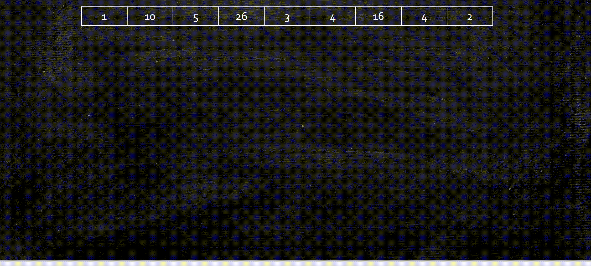
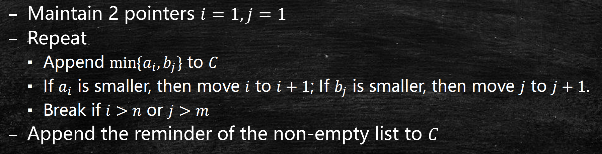

分治法(2)：归并排序与求逆序数
Last updated on May 5, 2025 pm
本文介绍了分治法在排序算法中的应用——归并排序，并应用归并排序来设计求逆序数算法。此过程中，我们会学习算法的正确性分析以及分治算法时间复杂度分析的主定理。
归并排序
今天，我们将从一类常用的算法——排序算法开始。考虑一个简单的排序问题，输入是个整数，要求输出这个数从小到大排成的序列。你能想到什么排序的算法呢？
从插入排序开始
最直接的思路是插入排序。我们维护一段已经有序的序列，并且不断将后来的元素插入合适的位置，直到所有元素都已被插入。
接下来，我们考虑这个算法的正确性及时间复杂度。对于正确性分析，这似乎是显然的。考虑到每次都是将元素插入已经有序的序列，让序列再次有序，我们可以用数学归纳法证明。
- 基本情况：第1次插入整数后，当然序列是有序的。
- 归纳：
- 假设序列在第次插入后是有序的，我们要证明序列在第次插入后保持有序。
- 设我们把整数插入了位置。那么根据算法，有 和 ，故插入后序列也是有序的。
对于时间复杂度，由于我们一共要插入个数，每次插入最多次操作，因此其复杂度为。那么，我们能不能用分治法来提升排序算法的性能呢？
分治法的设计
回顾一下，分治法的主要流程是：将原问题分解为几个规模更小的子问题，递归地求解这些子问题，再将子问题的解合并得到原问题的解。
分治法的设计还是两件事：
- 怎么分（如何将原问题划分为更小的子问题）
- 怎么治（如何将子问题的解合并为原问题的解）
由此，我们很自然的想到，可以将输入平均划分为两个子序列，对这两个子序列分别排序，再将排序结果合成最终的有序序列——这就是归并排序的思想。

现在”怎么分“已经解决了，但”怎么治“并没有解决，也就是如何将两个有序的子序列合并成一个完整的有序序列？
子序列合并
我们目前的问题是，给定两个有序序列和，如何将其合并为一个有序序列？
最直接的想法是仿照插入排序，将中的元素逐个插入中。这样的话，我们共要插入个数，每个数比较次，合并的时间复杂度为。那么对于整个归并排序，会有
可以求得，。
这个失败的结果在意料之内。和整数乘法的朴素分治法一样，我们只是改变了元素之间两两比较的顺序，总的操作次数并没有减少，因此时间复杂度并没有降低。
想要降低时间复杂度，我们就要避免冗余计算或操作！在这个过程中，有没有什么性质我们没有用到？似乎是有的，那就是子序列也是有序的，但我们在插入的时候并没有考虑这个。那么，基于这个性质有没有更聪明的做法呢？

基于和都是有序序列，我们可以维护两个指针和。这两个指针分别从左到右扫描和，并不断把和中更小的数加入中，直至其中一个到达序列末尾。这时我们把剩余的元素依次加入。
这个合并算法的正确性可以由数学归纳法证明。
正确性分析
归并排序的正确性也可以由数学归纳法证明，但这次我们对问题规模做归纳。
- 基本情况：当时，即只有1个数，序列自然有序。
- 归纳：
- 假设归并排序可以对所有长度的序列正确排序，我们要证明对长度的序列也可以正确排序。
- 对的原序列，我们先分成两个长度的子序列，由假设知它们能被正确排序。又因为我们可以证明子序列合并算法的正确性，因此最终可以得到正确的排序序列。
时间复杂度分析
我们先分析合并算法的时间复杂度。
一种分析是，指针最多移动次，而每次移动后最多移动次，因此该合并算法的时间复杂度为。
这种分析正确吗？让我们换个角度看看。从结果数组的角度看，中一共加入了个元素，而每个元素的加入，都对应了一次指针移动，或者更严谨地说，对应了常数次操作。我们也可以理解为每个输出的元素都对常数次操作负责，因此合并算法的时间复杂度为。这种分析方法被称为责任论证法（Charging Argument）。
从指针移动的角度看，事实上和都只扫描了序列一遍，且每次移动前仅有常数次操作，因此也可以得出时间复杂度为。
那么，归并排序算法的整体时间复杂度是多少呢？我们已经知道，合并两个长度为的子序列，时间复杂度为，因此我们有
只要求出即可得到归并排序的时间复杂度。
相信大家都知道，这里解出的，因为我们对归并排序非常熟悉。但面对这样的递推关系式，我们有没有更快的办法求出时间复杂度呢？
主定理（Master Theorem）
我们先给出主定理的形式。如果有
那么
参数的理解
在主定理中，有三个参数：、、。其中表示一个问题被分成个子问题，表示每个子问题的规模是原来的，而表示合并代价为。
以归并排序为例，我们有，即，满足。故由主定理可知，。
主定理的理解和证明
想要理解和证明主定理，我们还是从熟悉的树形图开始。在树形图中，深度每增加一层，问题个数扩大倍，问题规模缩小倍，因此在第层，会有个规模为的问题。而要想使问题规模减小到1，需要层，这也就是递归树的树高。
回忆一下，分治法的时间代价分为两部分：
- 分的代价：解决最终分出的所有基本问题
- 治的代价：每次将子问题的解合并为原问题的解
在这个一般的树形图里，我们分别计算两部分代价：
- 分的代价：最底层一共有个基本问题，解决每个基本问题的时间代价为，故“分的代价”为
- 治的代价：我们可以从上向下逐层计算合并的时间代价：
- 第0层：
- 第1层：
- 第层：
因此，当我们考虑两部分代价，总的时间复杂度为
化简可得到
注意，这里最后一项是叶结点的代价（即“分的代价”），其形式恰好与前面各项一致，从而提出后形成等比数列。
有了这个式子，我们可以来证明和理解主定理。
- 第一种情况：，那么公比，这会导致该等比数列的和与首项1的常数倍相近（如考虑）。也就是说等比数列的和由首项1主导，从而会由最上层的合并代价主导，。
我们也可以做严格的数学证明，
后续两种情况均可类似证明，在此从略。
这种情况对应的是治的代价占主导（合并问题代价占主导）的分治算法，即整个算法的时间复杂度取决于最上层的合并。这里我们回想一下采用朴素合并算法的归并排序，由于合并代价是，拆问题的代价已经可以忽略不计，最终的时间复杂度由最后一次合并决定，即。
- 第二种情况：，那么公比。与第一种情况相反，该等比数列的和与末项的常数倍相近（如考虑）。也就是说等比数列的和由末项主导，从而会由解决所有基本问题的代价主导，。
这种情况对应的是分的代价占主导（分解问题代价占主导）的分治算法，即整个算法的时间复杂度取决于解决最底层的基本问题（原因是太大导致基本问题太多）。考虑大整数乘法，其合并代价仅为，但拆出的子问题数太多，因此Karatsuba算法能够通过减少子问题数量来降低时间复杂度。
- 第三种情况：，此时公比，即每一层的时间代价相同。容易验证，。这种情况的一个例子就是归并排序，在归并排序中，最上层的合并代价为，次上层的合并代价为2个，再下一层为4个，以此类推，即每一层的时间代价相同。这时，“分的代价”和“治的代价”相平衡。
从以上分析我们可以看出，分治法的时间复杂度取决于分解和合并子问题速度的比较。若分解出的问题很多（很大），那么解决所有基本问题的代价（即最底层代价）会决定。若合并代价很大（很大），那么合并子问题的代价（即最顶层代价）会决定。当满足时，二者达到平衡，此时每层的代价相同。
求逆序数
掌握了分治算法的设计和分析方法之后，我们来看一个很经典的问题——求逆序数。给定一个个整数的序列，“逆序数”定义为满足的数对的个数。简单来说，就是这个序列中能选出多少个数对，使得前面的数比后面的数大。
最容易想到的是暴力法，即每两个数比较一次，显然这种方法的时间复杂度为。我们应该比这个做的更好。
分治法的设计
首先，怎么分？相信你一定能想到，先将原序列平均分为两个子序列，再递归地求这两个子序列中的逆序数。
其次，怎么治？也就是说，如何由两个子序列中的逆序数得到原序列的逆序数？我们可以发现，原序列的逆序对可以分成三种：两个数都在前半子序列的（设有个）、两个数都在后半子序列的（设有个）、两个数在不同子序列的（设有个）。由递归，我们已经知道了和，所以我们只要数出两个子序列之间的逆序对个数即可。

但是，怎么子序列之间的逆序对个数怎么数呢？
求子序列之间的逆序数
这里，我们假设输入的两个子序列分别是和，要计算出两个子序列之间的逆序对个数，即满足的数对的数量。
简单的想法
最简单的想法是，对每个中的，数一下中有多少个数比它小，再把所有结果相加。
这个算法的时间复杂度是多少呢？由于对每个，都要扫描一遍，其时间复杂度是。那么，整个求逆序数算法的时间复杂度呢？我相信你已经非常确定，一定是，因为我们已经见过太多类似的例子。这样的朴素算法，只改变了元素之间两两比较的顺序，并没有减少比较的次数，当然不能降低时间复杂度！
之前我们说道，想要降低时间复杂度，就要通过一些性质来避免冗余计算或操作！在排序中，这个性质是有序。在这里，子序列有什么良好的性质吗？似乎并没有。那我们还能降低时间复杂度吗？
没有条件，创造条件
我们可以先考虑子序列有序的情况。如果这两个子序列是有序的，那么数逆序对将变得容易，因为中一个小于的数一定小于之后的所有数。我们似乎只要遍历一次两个子序列，就能数出逆序对的数量。可是，现在的子序列是无序的，这个性质并不能使用。
但别忘了，没有条件，我们可以创造条件！只要我们在每次数逆序对时，将序列排好序，就可以减少数逆序对的操作！将归并排序和数逆序对相结合，我们可以设计出如下的算法。
我们维护两个指针、和一个记录逆序对数的计数器。我们仍然按归并排序中合并子序列的方法来移动两个指针，但不同的是，在每次移动到时，给计数器加上（即已经扫过的元素个数）。原因是当前之前的所有元素都比小，而之后的所有元素都大于等于，此时已经扫过的元素数（不含当前）就是含的逆序对的个数。
应当注意，若先到达数组末尾，这时应该让也继续走到末尾，或者给加上。这是因为当前及之后所有元素都比中所有元素大，从而中这个元素分别参与了个逆序对。
这样，我们就同时完成了归并排序和高效的逆序对计数。
时间复杂度分析
不难发现，这个求逆序对算法的时间复杂度应该和归并排序一样，因为只是在归并排序的每一步中多加了常数个操作。因此，求逆序对算法的时间复杂度为。
注：本文中所有图片均来自张宇昊老师的课程PPT。